Unity (complete) / Unreal Engine
Please select your Unity version:
You have selected Version 2017.4. This is the long term support version.
You have selected Version 2019.2 This is the most current version.
Developers of AR applications do not have to start from scratch and (re-)implement the complete graphics pipeline and physics simulations. Instead, 3D engines like Unity (Unity, 2020) or the Unreal Engine (Epic Games, 2020) already offer this functionality as a foundation for the development of real-time graphics applications.
Unity
Unity is a real-time graphics engine by Unity Technologies which developers can utilize to create 2D and 3D applications (Unity, 2020). This means that Unity’s graphics can be adapted to different graphic qualities, performances and visual styles. Applications can be deployed on more than 25 platforms, including Android, iOS, Windows Standalone and Universal Windows Platform. Unity is available in different pricing levels ranging from a free personal edition to a Pro version with additional support for larger companies. The required license level depends on the annual revenue. Many of the presented AR SDKs can be added to Unity projects so that their functionality is available directly in the 3D engine.
Installation
There are two ways to install Unity. One can use an installer for a specific Unity version or the intermediate launcher Unity Hub.
The installer for a Unity version can be downloaded directly from its archive. In the installation process, components for different target platforms such as Windows UWP, Linux, Android or iOS can be added. All intended target platforms for applications should be selected now. It is also possible to add platform build support components at a later stage but then installers for each of the platforms need to be downloaded and executed separately. If multiple Unity versions are used in parallel, the install location needs to be adapted manually. Installing multiple versions to the same folder, e.g. the default install location, will overwrite the previously installed version.
A more comfortable way of handling multiple versions and the build support components is the Unity Hub. It is a launcher which administers the versions of Unity. It offers a list of all Unity versions and they can be installed or removed at the press of a button. Similarly, the installation can be expanded by additional build support components at any time.
Unity Versions
Unity’s versions are labeled by a year, a major version number and a minor version number which are separated by dots, e.g. 2019.2.10. For each year, Unity provides a long term support (LTS) version which is recommended for longer lasting projects. Updates to the long term support version focus on stability and are released regularly.
Unity projects keep track of the editor version which most recently edited the project. Opening a Unity project with a newer editor version causes a re-import of all project assets. It can take a while to process the changes and additionally, content may be change automatically, e.g. if deprecated API usages are detected. Once a project has been upgraded to a newer version, it is not possible to open it with older versions again due to changed APIs and data structures. Thus, any Unity updates should be well-planned. When working in a team, all team members must agree on one Unity version. The used version must match exactly, including the minor release number, e.g. 2019.2.9 and 2019.2.10 are regarded as different versions.
Collaborative Work and Version Control
When working in a team or alone, it is generally recommended to use a version control software to create backups of the work. There are multiple alternatives available and one commonly used version control software is Git. It also works with Unity projects. When setting up a project, a gitignore file should be added at the root level of the Git project. A completely set up template for the gitignore file can be found on GitHub. It contains a description of all redundant files which Unity can regenerate, e.g. caches, build objects and meta files.
A problem which can occur in collaborative work is the merging of scenes. An entire scene in Unity is stored in one YAML file which means that a conflict arises if multiple team members worked on the same scene. It can become difficult to merge the save files since its contents are mapped to IDs with associated settings. For this case, Unity provides a tool called Smart Merge. Once it is installed, it can be integrated with Git and tries to perform an automatic merge of the two versions of the scene.
Project Structure and Project Setup
Once a new Unity project has been created, the project’s folder contains a subfolder called “Assets”. Here, all resources for the project, e.g. 3D model files, textures, scripts, etc. can be placed. Everything in this Assets folder and its subfolders is automatically imported into the project and can be integrated into the application. It makes sense to keep the Assets folder organized so that all developers know where resources are stored. One recommended way of setting up an Assets folder is to create individual folders for each type of resource, e.g. “Animations”, “Models”, “Textures”, “Scripts”, etc.
Some folder names are special since they are treated in a particular way by Unity (Unity, 2020).
For instance, a folder called “Plugins” will be searched for C/C++ DLLs which are integrated into Unity.
Another example is a folder named “Resources”.
Any file which is placed in this folder can be accessed by application scripts using the command Resources.Load.
A Unity project consists of different scenes. Each scene is a virtual space which can be populated with 3D objects and user interface elements. In the application, scenes can be loaded and unloaded individually or they can replace an opened scene. Unity’s WYSIWYG editor allows developers to graphically set up the 3D scene and arrange the 3D models accordingly.
User Interface
The following description of the panel positions refers to Unity’s default layout. The layout can be changed under Window > Layouts > Default.
The user interface of Unity’s editor consists of different panels. The most important panel is the 3D view (B). The view direction can be changed by right-clicking and dragging at the same time. Similar to games, the viewport can be moved by the WASD keys. Additionally, certain preset perspectives like a view from the left side or top side can be selected in a widget in right top corner. When clicking on the small cube in the middle of the widget, one can toggle between perspective and orthographic viewports.
The 3D view displays the content of one or more scenes. A scene consists of objects which can be ordered in a hierarchical manner. This scene hierarchy is displayed in a separate panel. Here, each entry corresponds to one object. To select an object, one can left click on the entry in the hierarchy or click on its geometry in the 3D view.
Play Mode & Debugging
Once a scene has been set up, one can test it using the built-in play mode. It can be activated by clicking on the play button at the top. In this mode, the behaviour of the final application is simulated. Unity will switch into a game view where the viewpoint of the camera can be seen. If this panel is focused, the application reacts to input. During play mode, one can also go back to the scene view. This is beneficial in order to examine actions which happen outside of the camera’s view. Additionally, everything which was possible when setting up the scene, e.g. moving objects around or changing values on components, it still possible. These changes are immediately picked up and affect the behaviour of the application. Therefore, developers can experiment with settings while the application is running and they can immediately see the results of their configurations. However, it is important to know that any changes which were made during play mode are reset when exiting play mode. The benefit of this is that one can perform destructive tests which completely alter the scene’s structure and still it is possible to go back to a valid state of the scene.
The execution can be interrupted at every point with the pause button next to the play button. This way, a specific runtime state of the scene can be examined. Next to the pause button, there is also a button which continues the application’s execution for one frame. This can be used in order to closely examine code which alters properties every frame.
In addition to Unity’s visual debugging tools, one can also perform traditional code-debugging using Visual Studio.
Importing and Placing 3D Models
In order to import a 3D model, its file needs to be placed in Unity’s Assets folder. After this, it can be created in the 3D scene by dragging and dropping it into the 3D view of the editor. Unity supports popular and application independent file formats like .fbx, .dae, .3ds, .dxf, .obj and .skp (Unity, 2020). Additionally, Unity is also capable of reading application-specific files from Autodesk 3ds Max, Autodesk Maya, Blender, Cinema4D, Modo, LightWave and Cheetah3D. Both application-independent and application-specific formats enable different workflows for the object import. The application-specific format requires less work when the 3D model is modified regularly. Any saved changes made in the 3D modelling application are immediately propagated to Unity. This enables 3D artists to view the 3D model in parallel in the modelling application and a preview in the developed application. However, Unity is only able to import such files if the corresponding application is actually installed. When working in a team with assigned roles, this can complicate the development setup because not only the team members working on the 3D models have to install the 3D application but also all other team members, e.g. developers who are focusing on implementing the code and do not modify the 3D files. This is especially problematic when working with a 3D modelling program which requires paid licenses for each device. Another drawback concerns the flexibility of the 3D model creation. The produced file may only contain the final 3D model. Any further auxiliary 3D models or copies must not be included in the same file. In contrast to this, when exporting a file to a generic 3D format, it is possible to choose which 3D objects will be included in the export. This allows for a finer control and separation between editing and import. The exported 3D formats are also directly supported by Unity. Therefore, the project can be opened without installing additional software. The disadvantage of the exported 3D formats is that every time a change is applied to the 3D model in the modelling application, the model needs to be exported again by hand. This means that there are two versions of each 3D model where one is contained in the modelling application and one is used by Unity. The creators have to make sure that the two versions match.
Components
Objects in a scene in Unity can be extended or modified by components. In the inspector panel, one can select such components and attach them to an object. Objects always contain a Transform component. In the inspector, developers can use this component to specify the position, rotation in Euler angles and scale of the object. Additionally, developers can add further components, e.g. to enable the physics simulation on an object or add a scripted behavior to the object.
Physics Simulation
The physics simulation is handled by a Rigidbody component. When it is added to a 3D object, the object will be considered in the physics simulation. Once the play mode is entered, it will be affected by gravity and starts falling down. Another part of the physics simulation is the collision detection. An object should have a collider or else it will pass through other objects like the floor and fall down infinitely. By default, Unity’s primitive objects like the cube or sphere are already equipped with a collider by default. For imported 3D models, the colliders need to be set up manually. This can be achieved by adding one or more collider components to the object. The available colliders also have primitive shapes like cuboids, spheres or capsules. There is also a Mesh Collider component which directly uses the object’s geometry as a collider. It is recommended to avoid using a Mesh Collider and instead approximate the object by a composition of primitive collider shapes. This improves performance since the collision detection for primitives can be calculated quicker than for any arbitrary shaped geometry.
Programming in Unity
The Assets folder also stores the application logic which is defined by C# scripts.
These scripts can react to events like the user input and can change properties on objects in a scene.
It is possible to change most values from the inspector panel like the position, rotation, scale or material.
In order to execute a script’s functionality, it needs to be added to a 3D object as a component.
First, the target object has to be selected.
After that, the component can be added in the inspector panel.
One can either drag the script from the Assets-browser onto the inspector panel or click on “Add Component” and search for the script’s name.
Scripts can only be added in such a way to objects of a scene if they inherit from the MonoBehavior class.
Once a script is attached to an object, Unity calls special functions in the script if certain events happened.
For instance, developers can implement an Update() function which is called once for every frame which is rendered.
Similarly, different callback-methods can be implemented which are raised at different points in the application’s or object’s lifecycle, e.g. Awake(), Start() and OnDestroy().
Details on available callback methods and the data structures which can manipulate an object’s properties can be found in Unity’s documentation.
If the script contains public variables, the values of the variables will be displayed in the editor. They are shown on the component’s panel in the inspector and can also be edited. This way, developers can configure initial values directly in Unity’s editor on a UI without touching the script again. For instance, public variables can be used to fine-tune the scripted behavior. If an object should move along one axis over time, one can expose a public variable which determines the speed of the object. In this case, the public variable is never assigned to in the script and the script only reads their value, e.g. to calculate the next position from the given speed. Since the speed value is shown in the editor on the component, developers can now tweak it so that it fits their expectations. Such input fields on the components are created for primitive variable types but also for all GameObjects, Transforms and MonoBehavior scripts. For these complex variable types, a box on the component’s UI is created which holds the reference. One can directly drag an object from the hierarchy view into the given box to establish the reference to the dragged object. The box will automatically be filled with the matching type which is attached to the object.
Prefabs
Once an object is fully set up in Unity’s editor, e.g. by importing the 3D model, setting its material and attaching components to it, it can be saved as a prefab.
The prefab saved the object’s instance on the hard drive and it stores the configuration of the object.
This way, the object becomes reusable so that developers can quickly place the same object with the same configurations in other scenes.
Additionally, it is possible to instantiate prefabs by scripts.
To do so, the object can be set up in the scene and is saved as a prefab.
Then, the object can be deleted from the scene since it should only appear at a certain moment.
A reference to the prefab is handed to the script which determines when to create the object in the scene.
The reference can be set by dragging the prefab file from the Assets browser onto the corresponding field of the component.
The script creates a GameObject from this reference by calling GameObject.Instantiate().
Supporting Material
For exploring Unity and its functionality, one can take a look at its User Manual. It also contains explanations and examples for the implementation of application logic using Unity’s API. Unity also provides an Asset Store which contains scripts, 3D models and usage examples which have been created by other developers. It contains a mixture of free and paid content which can be downloaded for the own project to save development time.
Exercise: Importing a 3D Model in Unity and Moving It by Script
If you follow this exercise in order to deploy the project to the Microsoft HoloLens in the next exercise, please use Unity 2017.4.
The goal of this exercise is to get used to Unity’s user interface, scripting in Unity and the general project workflow. We will import a 3D model into Unity and write a script which will control the 3D model’s position.
- Start Unity. You will be greeted by a window showing previously opened projects. Click on “New” in the top right of the window.
-
Enter a project name and set its location. Make sure that a 3D template is used and that Unity Analytics is turned off. When logged in with an account, Unity Analytics gives developers a real-time insight into data about how users interact with their application. It is not required in this example.
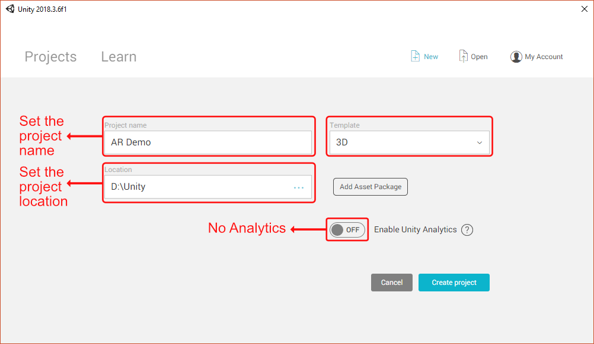
- Once the project has been created, the 3D model can be imported. To do so, open a file browser and navigate to the project’s folder. Here, create a folder called “3D Models” and copy the 3D model there. You can use any compatible 3D model format. In the example we use the Stanford bunny in the .obj file format. It can be downloaded in the supplementary material).
-
Return to Unity’s editor. In the Assets browser you will now find the “3D Models” folder and inside of it the 3D model. You can create an instance of the 3D model in the scene by dragging and dropping the 3D model file from the assets browser onto the 3D view or the scene hierarchy. In order to quickly move the viewport to the 3D model, double click the object’s entry in the hierarchy view.
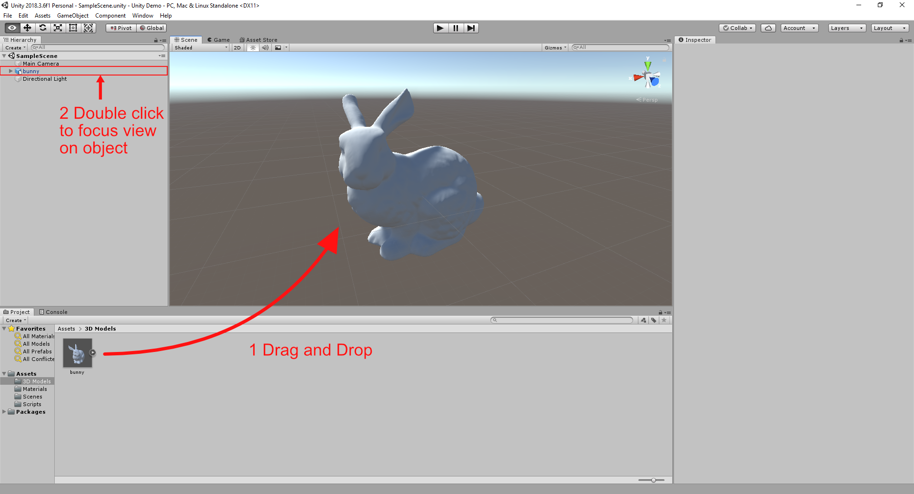
-
With the 3D object selected in the scene, in the inspector panel, the attributes of the 3D model can be changed. Under “Transform”, its position, rotation and size can be adapted to fit the scene. Set the position to (0, 0, 0) so that the object is situated in the origin of the coordinate system.
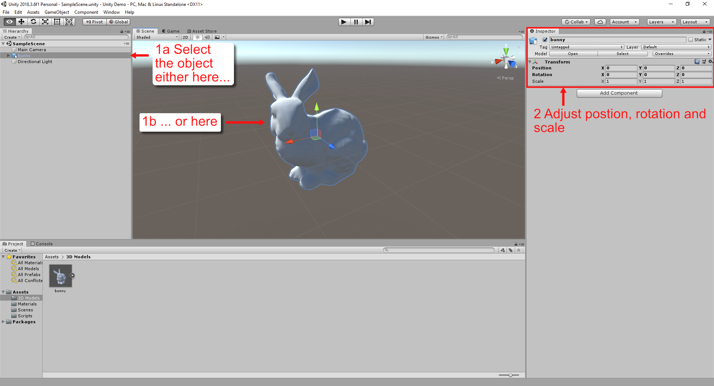
- It is also possible to add a material to the bunny which can be used to add color to the object’s surface. In order to do this, create a new folder called “Materials” in the root directory of the assets browser. Then right click on the assets browser and choose “Create > Material”. Give the material a descriptive name, e.g. “BunnyMaterial”.
-
We will now change the material’s color. Select the material in the assets browser. Its properties can now be edited in the inspector panel. By default, the material is setup as a Physically Based Rendering (PBR) material, so its surface color can be changed in the “Albedo” option. Click once on the white box next to “Albedo” to open a color picker dialog. Select a color and simply close the color dialog again to apply the selected color to the material.
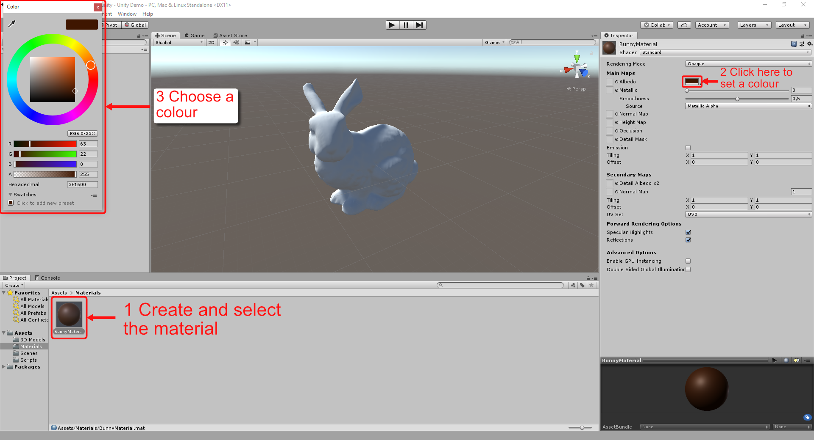
-
In the inspector view, the color on the sphere in the material preview window has been changed accordingly. However, the color does not appear on the 3D model yet. In order to view the material on the model, the material must be applied to it. The simplest way to do this is to drag and drop the material file from the assets browser onto the object in the 3D view.
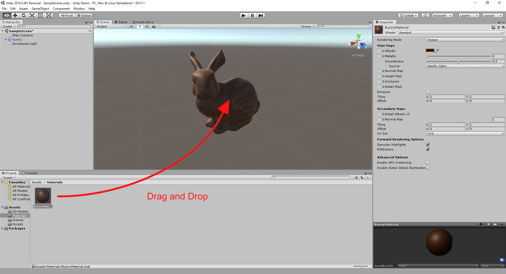
- Make sure that the object is also visible in the game view since it provides a preview of the final application. If the object is not visible, go back to the 3D view and select the camera. Move and rotate the camera so that the object is visible from its perspective. This can also be done by the widgets or by entering values in the transform component in the inspector. When the camera is selected, a small preview window will appear in the right bottom of the 3D view which shows what the camera sees. In the example scene, we used the positional values (0, 1, 3) and rotation angles of (20, 180, 0).
- We are now ready to create the script which will handle the movement of the 3D object.
Similar to the creation of the other files, first create a folder called “Scripts” and then create a C# script called “ObjectMover” by right-clicking and selecting “Create > C# Script”.
The created script is automatically set up as a C# class which is also called
ObjectMover. It is important that the name of the file always matches up with the name of the class. The script is also set up so that it inherits fromMonoBehaviorwhich means that the script can be attached to game objects and that it can implement special callback functions. Double click on the file in the assets browser in order to edit it in a development environment, e.g. Visual Studio. - With
StartandUpdatetwo of these callback methods have already been defined in the class. We will first modify the update-function to implement the actual movement:// Update is called once per frame void Update() { float xAxisMovement = Mathf.Sin(Time.time); gameObject.transform.position = new Vector3(xAxisMovement, transform.position.y, transform.position.z); }The given code segment makes the object go back and forth between the -1 and 1 coordinates on the X axis. We can move an object in such a periodical manner by using the time as an input for the sine function. This is done in the first line in the
Updatemethod. The sine function is implemented in theMathfnamespace. Next, we only require a way to access the time. If we look at Unity’s documentation, we can see thatTime.timeis exactly what we are looking for since it provides the time in seconds since application-startup. The second line handles the actual movement of the object. The local variablegameobjectis defined in the MonoBehavior parent class and it refers to the object instance to which the script is attached. By accessing itstransformvariable, one can edit its position. If we assign values to the position, it will apply the values to the exact same Transform component that we previously changed manually in the inspector view to set its position. Since theUpdatefunction is called once per frame, the object’s position will be updated in every frame step. Thus, the changes will appear as one continuous movement. - If you start Unity’s play mode now, the object will still not move since the script is not yet attached to the object. In order to fix this, navigate to the script in the assets browser. Then select the object in the 3D view or scene hierarchy. Drag and drop the script file onto some free space on the inspector panel. This will create a new component with the name “ObjectMover” - the name which we defined for our script.
- Now, we can enter play mode by hitting the play button. The editor will automatically change to game view and you should now see the object moving back and forth.
-
Finally, we can also adapt the movement speed. Go back to the script and create a public float variable speed and assign it the value 1. Any public variables of a MonoBehavior are exposed in the inspector panel as configurable values. In the case of our float variable
speed, this means, that Unity will automatically create a numeric text field on the MoveObject component where we can enter values. Multiply thespeedvariable with the time.using System.Collections; using System.Collections.Generic; using UnityEngine; public class ObjectMover : MonoBehaviour { public float speed = 1f; // Start is called before the first frame update void Start() { } // Update is called once per frame void Update() { float xAxisMovement = Mathf.Sin(speed * Time.time); gameObject.transform.position = new Vector3(xAxisMovement, transform.position.y, transform.position.z); } } - In the editor, it is now possible to edit the speed. This also works while in play mode so that changes to such properties can be previewed in real-time. However, any changes while in play mode will be reset once play mode is exited again. This way, developers can experiment with various configurations in play mode and go back to the state which was active when entering play mode. For instance, you can now enter the play mode by click the play button. Select the object and change the speed value on the ObjectMover component. The speed of the object in the preview will also adapt.
Exercise: Developing a Unity Project For the Microsoft HoloLens
At the moment, Unity 2017.4 should be used since this version which is currently supported by the stable release of the MixedRealityToolkit.
The goal of this exercise is to develop an AR project with Unity so that it can run on the Microsoft HoloLens. We will start with the result of the last exercise but the shown procedure also applies to any project which is created from scratch.
Some minor adjustments are required to prepare the result from the last exercise for AR:
- The project will be set up in a way that the user starts at the position (0, 0, 0). Currently, the bunny object is also at the origin of the coordinate system so that the user will inside of the bunny and will not be able to see it. To fix this, move the bunny to the position (0, 0, 2). Unity units correspond to meters and so, the bunny will be displayed 2 meters in front of the user if the application is started.
- Also adjust the scale of the bunny so a smaller size (at the moment it is roughly one meter long). You can use the grid in the 3D view as a reference for the real-world scale since one cell has a length of one meter big. A suitable size should be (0.3, 0.3, 0.3).
- We will use the MixedRealityToolkit as a supporting library in Unity. It provides access to some HoloLens-specific functionality, e.g. to the spatial mapping mesh. The MixedRealityToolkit is open-source and it can be found on GitHub. Under releases it can be downloaded. Please make sure to choose the version which is labelled with Latest release (not the versions which are tagged as Pre-release). Usually, the release notes also mention the targeted Unity version, so you can check if you chose a compatible release. The release provides some packaged assets. Download the file with the ending .unitypackage without Examples or Preview in the name. You can save this Unitypackage anywhere on your computer, just remember the file path.
-
In Unity, perform a right-click on a free space in the assets-browser panel and choose “Import Package > Custom Package…”. In the opened dialog, navigate to the path where the downloaded unitypackage was stored and import it.
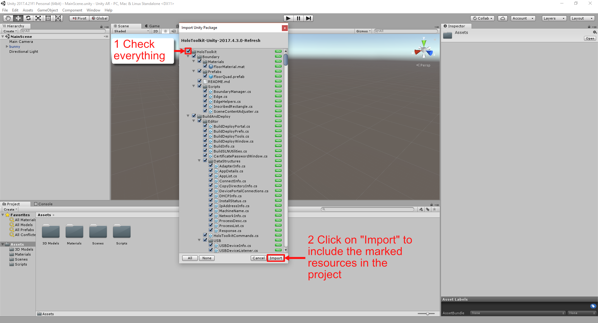
-
The imported package will create a new folder in your assets, called HoloToolkit, and copy the content there. Additionally, a new menu entry “Mixed Reality Toolkit” can be found in the top menu bar. It contains quick ways to set the project up for Mixed Reality. Click on the MixedRealityToolkit entry in the menu and choose “Configure > Apply Mixed Reality Project Settings”.

-
The following dialog gives detailed options about specific project settings. Among others, the checked points set up the Unity project for UWP development which is required for the HoloLens. Additionally, XR support is activated which tells Unity that the build application should run on a head-mounted display. For a collaborative experience which uses the networking system which is provided by the MixedRealityToolkit, one can enable the sharing settings. However, for this demo this won’t be necessary. Hit “Apply” to finish the process.
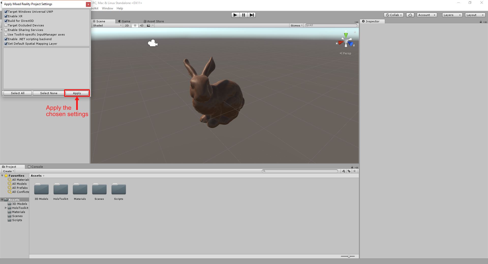
-
Next up, we need to prepare the scene for Mixed Reality. This can be achieved with the next menu entry. As before, go to the top menu bar entry “Mixed Reality Toolkit” and choose “Configure > Apply Mixed Reality Scene Settings”. A similar dialog will open up where you can specify how the scene should be altered. For instance, the camera will be exchanged for a prepared version which can react to the user’s head movements. It is also a good idea to make the script reset the camera’s position to the origin. This way, when the application starts or the scene is loaded again, the view always starts there and the developer can account for this in the scene design. The script will also import some prefabs from the Mixed Reality Toolkit which are able to detect input gestures. The gaze cursor which is a small ring in the centre of the user’s vision helps the user in focusing objects for interaction. In order to use this cursor in own applications, the prefab needs to be placed in the scene. If you want to access the 3D scan of the environment, which is continuously created by the HoloLens, please check Add the Spatial Mapping Prefab. It places an empty GameObject in the scene with a Spatial Mapping Manager attached to it. During runtime, this manager will create and update the mesh of the 3D scanned environment in this scene. Hit “Apply” in the dialog box to adapt the currently open scene for Mixed Reality.
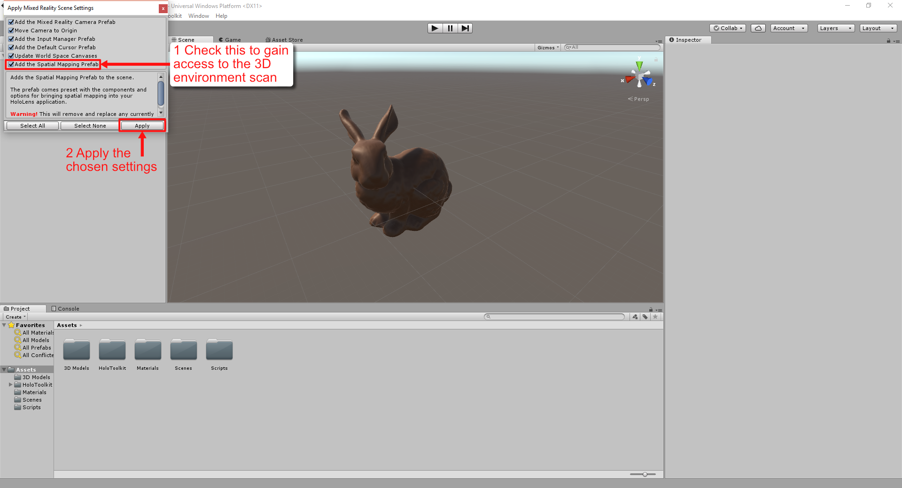
-
Again, click on the “Mixed Reality Toolkit” menu entry and this time select “Apply UWP Capability Settings”. It opens another dialog window with checkboxes for common permissions. Some functionality of the Mixed Reality Toolkit, but also from own scripts, e.g. accessing the microphone, the internet or the spatial mapping, require explicit permission by the user. In this dialog, developers can state that they require this permission. If users open the app for the first time, they will be asked to agree to these permissions. If you checked the Spatial Mapping option in the previous step, you need to check Spatial Mapping here, too.
-
In the top menu, go to “File > Build Settings”. In the opened dialog window, make sure that on the left, the platform is set to Universal Windows Platform. This should already be the case because this is one of the settings which were automatically changed in step 4. The active platform is indicated by the Unity logo next to it.
-
To include the currently opened scene in the build, click on the “Add Open Scenes” button. After that, the scene should appear in the list above the button.
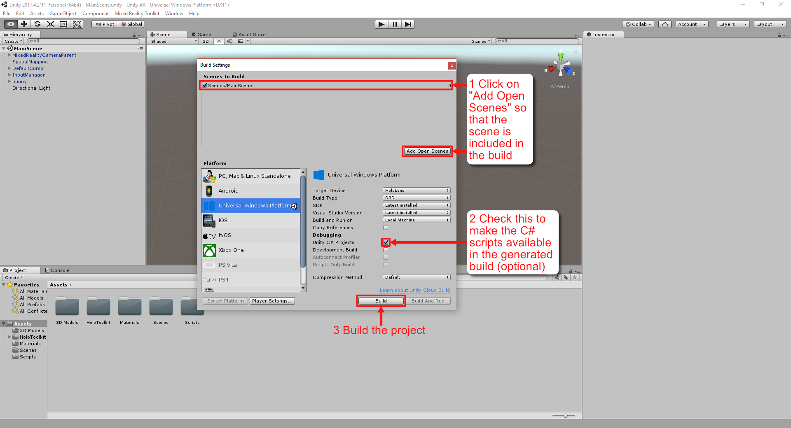
-
You can also check the “Unity C# Projects” option. This is not really required but it is helpful: The build will generate a Visual Studio solution and if this option is checked, the C# scripts are available in the solution. In the solution, the C# scripts can be changed without going back to Unity and re-building the project. A re-build is only necessary in Unity if a project setting or anything in the scene was altered.
-
Click on “Build” to generate the Visual Studio solution. It will ask for a folder where the solution should be saved. In order to keep the project tidy, create a folder “App” and select it. The build will be generated in this folder.
-
Once the build is finished, navigate into the folder that you just created and which now contains the build. You will find a Visual studio solution (with the ending .sln) and the same name as the project. Please, open it.
-
In the Visual Studio solution, change the configuration to “Release” and the target architecture to “x86”. Select the HoloLens as the deploy target by changing the entry next to the green play button to “Device”. The entry can be changed by clicking on the small black triangle next to the text on the button.
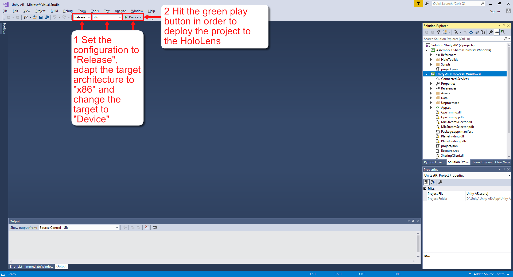
-
Make sure that the HoloLens is connected to the development PC by USB. Click the green play button in Visual Studio to start the installation of the app on the HoloLens.
-
If this is the first time that you are building an app for the HoloLens, it will probably ask you for a PIN. You can find this dynamically generated code in the developer settings on the HoloLens.
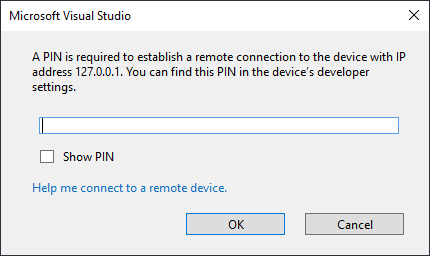
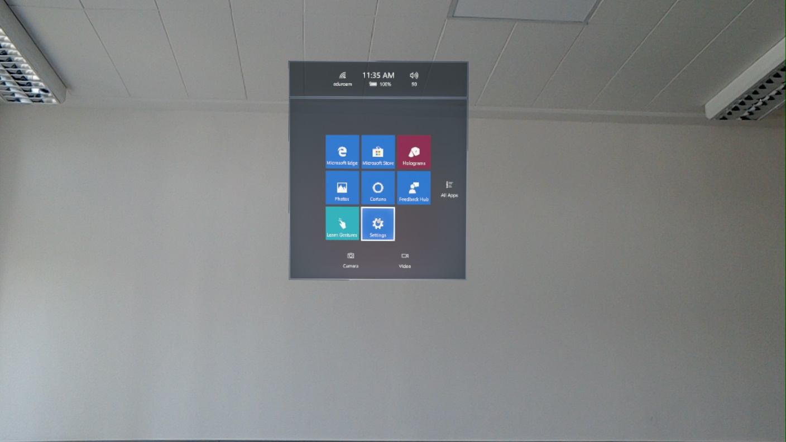
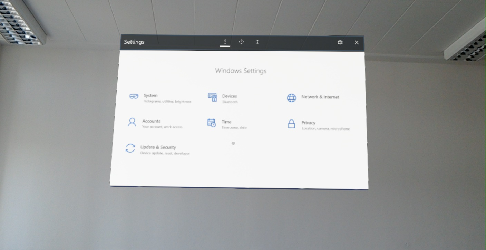
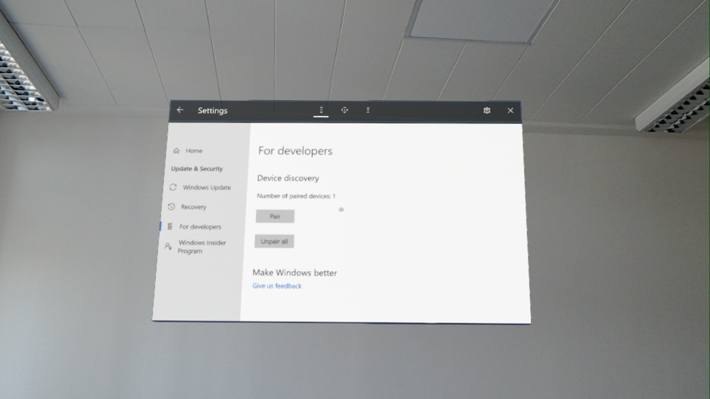
- To stop the application again, you can click on the red box which has appeared roughly at the same place where the green play button was. This only stops the execution. The application is still installed on the HoloLens and can now be started directly through the start menu on the HoloLens.
Exercise: Adding Interaction to a HoloLens Application
This exercise uses the MixedRealityToolkit 2017.4 release. With the release of the MixedRealityToolkit vNext in the near future, the described interfaces and techniques could change and become obsolete.
The exercise will use the results of the previous exercise.
In the next part of this exercise, we will add interaction to the app. We will write scripts which listen for user input in order to change properties of objects in the scene.
In order to handle (HoloLens-specific) input in a script, it needs to implement the corresponding interface which is provided by the MixedRealityToolkit. If the user interacts with an object, the input manager of the MixedRealityToolkit will look for scripts with this interface on the object.
One can for instance implement the following interfaces:
- IFocusable: Provides methods which are called if the user starts or stops looking at the object
- IInputHandler: Similarly to mouse clicks, the interface provides methods which are called if the user starts or stops a tap gesture
- IInputClickHandler: Provides the method which is called if the user performs a tap gesture
- IHoldHandler: Provides methods for reacting to long-lasting tap gestures where the user holds down the tap gesture for an extended amount of time
- INavigationHandler: Provides methods for reacting to drag gestures for navigating through content, e.g. scrolling
- IManipulationHandler: Provides methods for reacting to drag gestures for manipulating objects
Preparing an Object for User Interaction
A gameobject must have a collider so that the input manager can recognize the object as a possible target. We can use any convex 3D collider type which is provided by Unity and it is also possible to set up combinations of colliders. In this example, we use a box collider.
-
Add a box collider to the bunny. To do so, select the bunny gameobject and click “Add Component” in the inspector. In the search field, start typing “BoxCollider” and select the entry “Box Collider”. It adds a box collider-component to the gameobject.
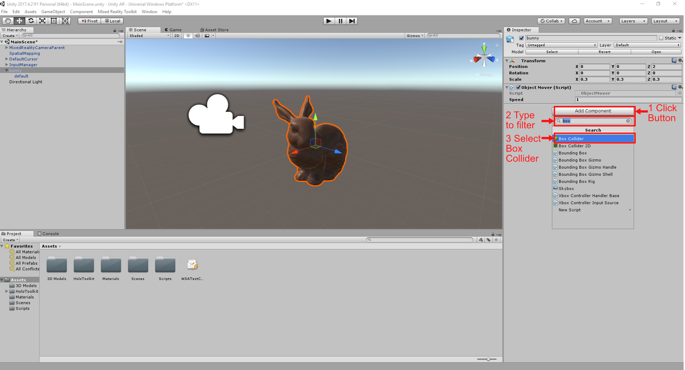
-
The box collider is also visible in the 3D view as a green box. At the moment, it does not fit the bunny. To fix this, the box collider component provides the input fields center and size in the inspector. They can be used for exact positioning of the box around the mesh. However, a tight fit on a complex mesh is quite difficult to achieve by entering numbers alone. Therefore, you can also click the “Edit Collider” button. The green cube in the 3D view now has small handles on its sides which can be dragged. Hint: If you set the view to orthographic and go to pre-defined top- or side-views you can determine exactly how far the collider needs to go. You can do this by clicking on the widget in the top right of the 3D view (click the cube in the middle of the widget to switch between orthographic and perspective view).
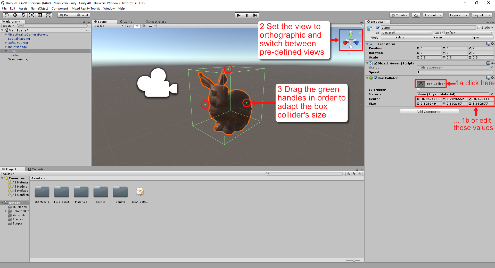
Focus Behaviour
We will now implement a short script which illustrates how to react to the case if the user focuses an object.
- In the Assets view, navigate to the Scripts folder, right click and add a new C# script. Call it ColorChanger.
- Double-click and open the script.
-
Interfaces for input handling are bundled in the HoloToolkit.Unity.InputModule namespace. We need to declare that this script uses content from this namespace. In the using directives, add the following line:
using HoloToolkit.Unity.InputModule; -
We now want to implement the
IFocusableinterface. To do so, add it in the class declaration:public class ColorChanger : MonoBehaviour, IFocusable { ... } -
Most likely, your Visual Studio will now complain that the methods of the interface are not implemented. The fastest way to fix this it to perform a right-click on the interface name with the error underlining and select “Quick Actions and Refactorings… > Implement interface”.
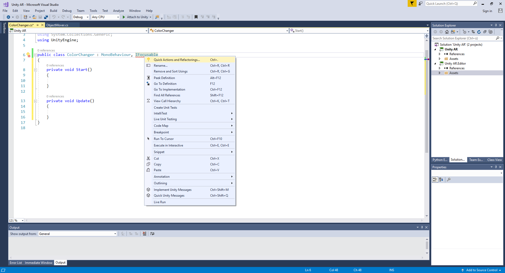
-
The command will add the methods which are defined in the interface to the class. In the case of
IFocusablethese areOnFocusEnterandOnFocusExit. -
Add the following code to the script:
public class ColorChanger : MonoBehaviour, IFocusable { public Color focusHighlight = Color.blue; Renderer rend; private Color origColor; private void Awake() { rend = GetComponentInChildren<Renderer>(); origColor = rend.material.color; } public void OnFocusEnter() { rend.material.color = focusHighlight; } public void OnFocusExit() { rend.material.color = origColor; } }Every time the user focuses the object, it will be highlighted in a colour.
- In Unity, add the script to the bunny as a component. If you want, you can also change the focusHighlight colour to something different in the inspector.
- If you now execute the application, the bunny will turn to your defined colour evey time that the cursor targets it.
Input Click Handling
We will now see how to react to tap gestures.
- Navigate to the Scripts folder in the Assets panel and add a new C# script. Call it “ObjectStartStopper”.
- Add the using directive
using HoloToolkit.Unity.InputModuleto the script. -
Implement the interface
IInputClickHandleraltering the class declaration topublic class ObjectStartStopper : MonoBehaviour, IInputClickHandler { ... } - Implement the methods of the interface.
It will add one method
OnInputClicked. -
Complete the script to this code:
public class ObjectStartStopper : MonoBehaviour, IInputClickHandler { private ObjectMover mover; private void Awake() { mover = GetComponent<ObjectMover>(); } public void OnInputClicked(InputClickedEventData eventData) { if (mover == null) { Debug.LogError("No ObjectMover found on the object"); return; } mover.enabled = !mover.enabled; } }We want to start or stop the movement of the bunny if the user taps on it. First, we need to get a reference to the
ObjectMoverscript that we implemented earlier and which is attached to the bunny as a component. If the user taps on the bunny,OnInputClickedis called. We make sure that we acutally got the reference to the object mover and then we toggle its enabled-state. If a component is disabled, methods like Start and Update are not called anymore. In our case, this stops updating the position of the bunny. - In Unity, add the component
ObjectStartStopperto the bunny gameobject. - If you now press play, you can emulate a tap gesture by pressing Shift + Left Click. If we focus the bunny with the cursor (this is now easy to see since the bunny will change its colour when focused) and perform a tap gesture, the bunny should stop moving. If we tap on it again, movement will start again.
Unit Testing in Unity
Unity uses an NUnit adaptation.
Using Unity Test Runner
Unity provides the “Test Runner” window where tests can be created and are executed.
To show this view, go to “Window > General > Test Runner”.
The test runner consists of two sections which can be switched by the buttons “PlayMode” and “EditMode” at the top of the window.
PlayMode tests are similar to the runtime environment when clicking play to start the application.
This means that MonoBehaviours will go through their lifecycle, i.e. Awake and Start methods will be called.
These kinds of tests also allow the developer to specify at which point a frame should be rendered.
Therefore, one can precisely define when the Update methods on MonoBehaviours will be called.
EditMode tests can check application code which does not require these MonoBehvaiour callbacks.
It does not do the usual scene setup work that the PlayMode test does.
Possible test scenarios include checking the configuration before the application would start.
Inside of a test script, two types of tests can be defined by an attribute in front of the method declaration: [Test] and [UnityTest]
Tests marked with [Test] behave like usual methods which are executed line by line.
[UnityTest] methods behave like coroutines and should have the return type IEnumerator.
This way, these tests can contain yield statements which can delay the execution of subsequent commands.
For instance, yield return null causes the next frame to render.
In PlayMode tests this calls the Update function of any active MonoBehaviours.
After that, the execution is resumed.
Creating an EditMode Test
When clicking on the “EditMode” button at the top, the test section for this kind of test is shown. Tests need to be placed in a folder with an assembly definition. This definition file influences the compilation of the project and tells Unity under which circumstances, e.g. for which platforms, the content should be included in the built project. In the test runner window, Unity will show a button “Create EditMode Test Assembly Folder”. Clicking this button will automatically set up a folder called “Tests” and the assembly definition in the folder which is currently opened in the assets view. EditMode tests are part of the runtime environment of Unity’s editor as opposed to PlayMode tests which work in the actual application runtime environment. Therefore, inside of the “Tests” folder, one needs to create a folder which is called “Editor”. The precise naming is important because folders named “Editor” tell Unity that their content should be executed in the editor. Inside of the “Editor” folder, one can create a test script by right-clicking and selecting “Create > Testing > C# Test Script”.